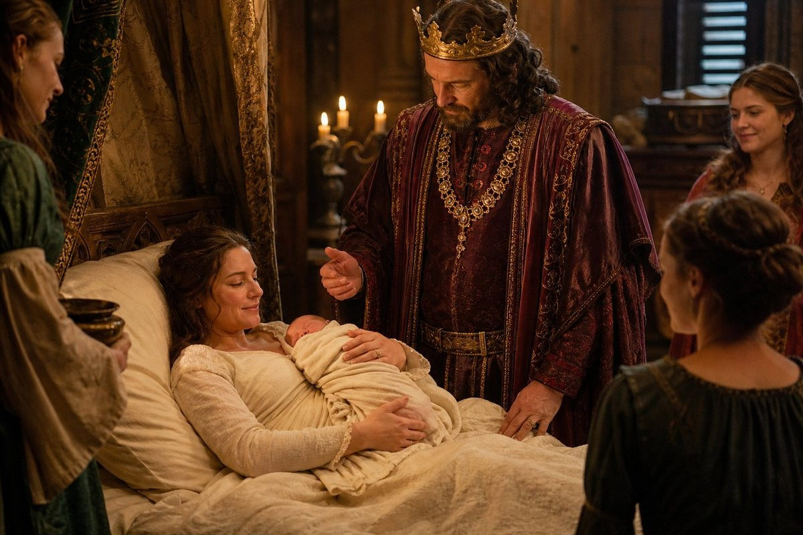
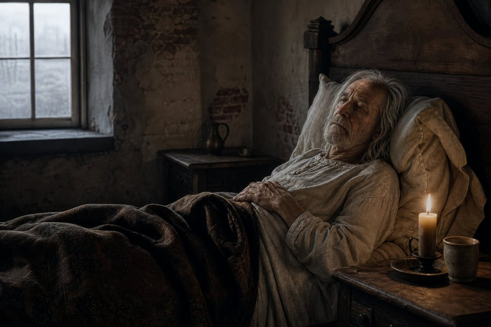
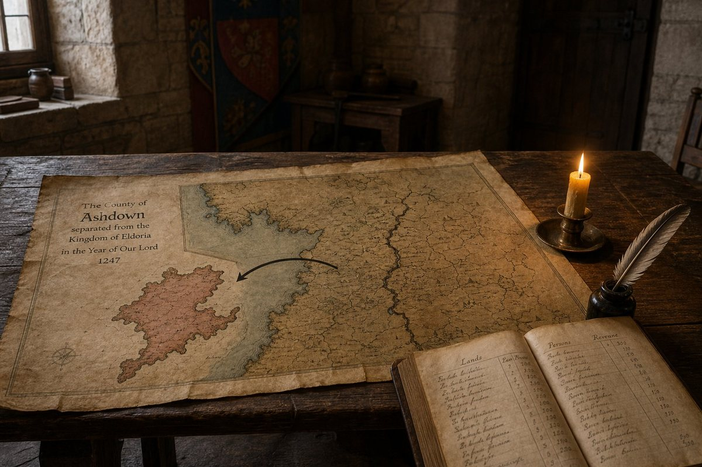
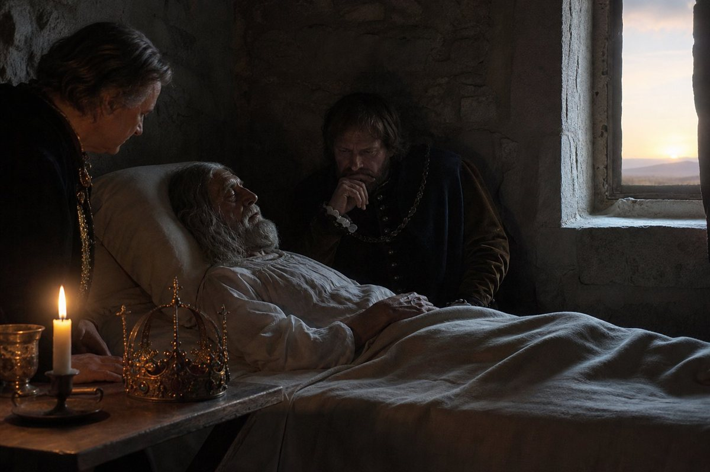
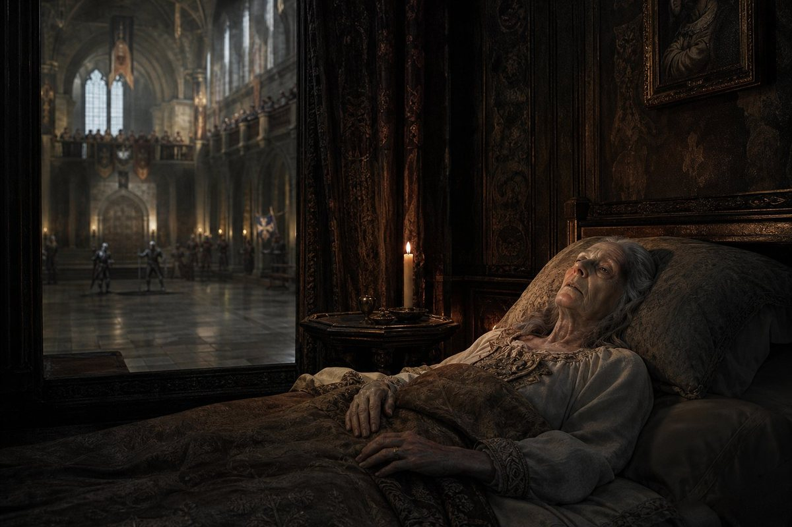
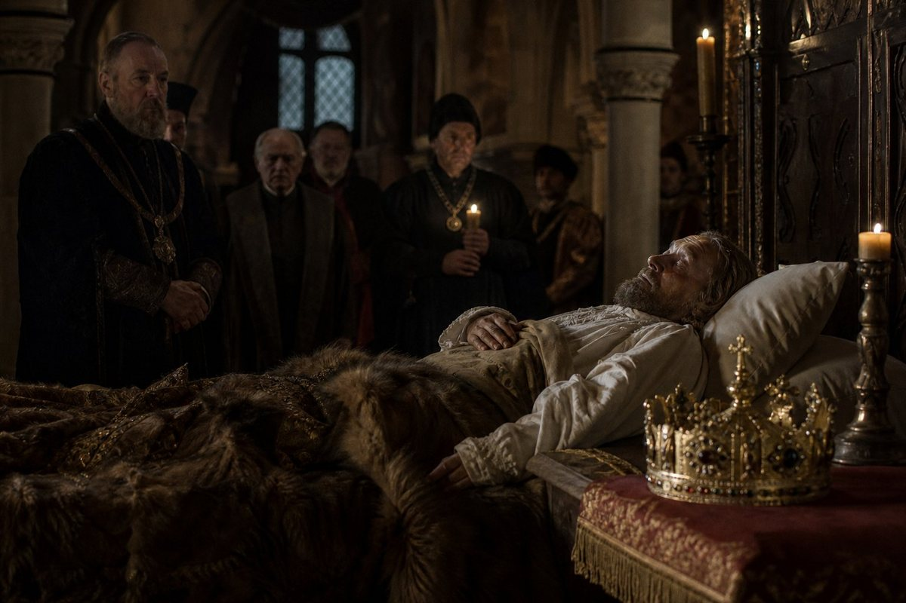

The third month of 931
I am going to write about my mother.
She is fifty-eight. She was born in a country I have never been to, and she came to Regensburg as a bride in 901, when my father was nineteen and not yet a king. She was his wife from 901 and his soulmate from the thirteenth day of the tenth month of 907, which was before I was born and before my brother was born and before any of the children in this book were born.
She stayed at the gate in 908, when my father walked to Rome and the company walked with him and the realm was held by a woman and a book. I have read that page. She did not go. She stayed, and she held the gate, and she was the Queen who stayed at the gate in 908.
She is my mother. I have been in this building for seventeen years and she has been in it for thirty, and I am going to write about her now because the record is going to stop on the eleventh day of the fifth month of 932 and because she is going to die on the third day of the fifth month of 931, and because I am the one who has to write it.
The third day of the fifth month
On the third day of the fifth month of 931, Queen Raina died of a heart attack.
She was fifty-eight. She was the old king's wife from 901 and his soulmate from 907, the King's mother, and the Queen who stayed at the gate in 908.
The record calls the King's memory of it Died. That is the word. Died. Not grieved, not wept, not mourned. Died. A memory with one word in it, and the word is the record's, and I am going to put it down as the record puts it because the record puts it down and because my brother's memory of his mother's death is one word long and that word is the record's.
I was in the building. I heard it. I am not going to write what I heard, because what I heard is mine and not the record's, and I am the one who counts and I am counting the days.
She was fifty-eight. She was born in a country I have never been to. She came here in 901. She stayed at the gate in 908. She was the old king's wife and his soulmate and the King's mother, and she died on the third day of the fifth month of 931, and the record gives me the date, the cause, and the word Died, and that is all it gives me, and that is all I am going to say about the death of Queen Raina, because I am her daughter and I am the one holding the pen and the pen is the only thing I have and I am not going to put more into it than the record puts into it.
The eighth day of the fifth month
On the eighth day of the fifth month of 931, five days after my mother died, Dusica bore a son, and the King named him Antiphates.

Antiphates. The same name as the King. The record gives the birth, the date, the name, and does not say why the King chose it.
I am going to say what I think, and I am going to mark it as mine. I think he named the boy after himself because he is the King and because he is not as great as his father and because his father named his son after his own father, and because a man who is not as great as the man before him and who has just lost his mother and who has five children and is twenty-eight and has a realm of one hundred and seven counties names his youngest son after himself because that is what men do when they are kings and they are afraid.
That is my reading. I am marking it as mine.
The boy is the fifth child. Sophe is the eldest. Philainis, Murrhine, Nikanor, and now Antiphates. Five children in seven years. A Queen who has borne five children and whose husband has been in Rome and in wars and in hunts and at the door of a feast for one hundred and thirty-two days, and who is called soulmate on a date in the third month of 929.
The second day of the tenth month
On the second day of the tenth month of 931, Ludwig the Black died of illness. He was sixty.

He was once King of Bavaria. My father declared war on him in 906, beat him and imprisoned him at Lengenfeld on the nineteenth day of the fifth month of 907, and took his crown. He lived twenty-four years after that — as a champion, as Count of Frankfurt, as a man who scorned my brother's pledge in 920, and as a man who was imprisoned again in 921.
He died a disgraced count. The record gives the date, the cause, the age, and does not say what he thought in his twenty-fourth year after Lengenfeld.
Frankfurt leaves the realm with his heir. The realm drops to one hundred and six counties.

One county in, one county out. The realm was at one hundred and seven on the first day of the first month of 931. It is at one hundred and six now. A death, a border, a count, and the number goes down for the first time in this book.
The twenty-sixth day of the first month of 932
On the twenty-sixth day of the first month of 932, Friedrich the Forgetful died.

He was the King of East Francia, and he was the man who lost Lautern in 919 and the holy war in 922. His war, begun against my father in 920, was won by his son on the first day of the tenth month of 922, and that was the last of my father's wars closed.
The record gives the date and the name and does not say how he died or where. He was the King of East Francia, and he died in the first month of 932, and his son is Karl, who is thirty-eight and who borders Bavaria.
The first day of the second month
On the first day of the second month of 932, Bratromila of Ráb died.

She hosted the Recital in 912, which my father won. I have read that page. She was the hostess of the hall where my father stood and spoke and was judged, and she was the woman who set the contest and the woman who watched it, and now she is dead, twenty years later, in the second month of 932.
The record gives the date, the name, and the word host, and nothing else.
The nineteenth day of the third month
On the nineteenth day of the third month of 932, King Uniedrog of Poland died.

He hosted the Recital in 915. My father went to Poland and stood in his hall and spoke and was judged, and now the King of Poland is dead and Poland passes to Sławomir, and the record gives the date, the name, and the succession.
Two Recitals. Two hosts. Two dead men in two months. The record gives me their names and the dates of the contests and the dates of their deaths, and it does not say what either of them thought when the Recital ended and the guest went home with the prize.
The first day of the fourth month
On the first day of the fourth month of 932, a second coronation began.
The intent is Bear Witness. The due date is the fourteenth day of the eighth month of 932. The record does not say why a crowned king is being crowned again.
I am going to put that down and sit with it, because it is the last thing in the record that I do not understand and because the record stops on the eleventh day of the fifth month of 932 and I am not going to guess at the reason.
The King is twenty-nine. He is August. He is a Mystic and a Prolific Pilgrim and a Religious Scholar, and he has been to Rome twice and wept at a church door and translated a monument for his fellow pilgrims, and now he is being crowned again, on the first day of the fourth month of 932, and the record gives me the intent and the due date and does not give me the reason.
I am going to mark the gap as the record's.
The eleventh day of the fifth month
On the eleventh day of the fifth month of 932, the record stops.
I am on the road at Spytihněv, in Moravia. I have been on the road for — I do not know how long. I have stopped counting the days, because the record has stopped counting the days, and because I am the one who counts and if the record does not count then I do not count either, and because I am on the road and the road does not have numbers on it.
The record stops here. On the eleventh day of the fifth month of 932, at Spytihněv, in Moravia.
I am going to write what I know and what I do not know, and I am going to stop where the record stops, because I am the fifth hand of this book and the book has been honest about its gaps for five volumes and I am not going to be the hand that fills one in.
Here is what I know.
The King is twenty-nine. He is August. He is my brother. He has a realm of one hundred and six counties, the sixth largest of five hundred and ninety-nine. He has a wife and five children. He has a second coronation that began on the first day of the fourth month of 932 and is due to end on the fourteenth day of the eighth month, and the record does not say why.
My mother is dead. She died on the third day of the fifth month of 931, at fifty-eight, and the record gives me the date, the cause, and one word for my brother's memory of it, and that word is Died.
My father is dead. He died on the twenty-eightth day of the sixth month of 920. I was seven. I do not remember the day.
The men who walked to Rome in 908 are all dead now. Germano, Laurentios, Slavac. The King was not on that road — he was a boy — and he is the only one left who was in the building when it began, and the building is still standing and the book is still open and I am the one holding the pen.
I am nineteen. I was born in this building on the thirty-first day of the eighth month of 912. I have never been further from it than the hills behind it — until now, when I am on the road at Spytihněv, in Moravia, and the record stops.
Here is what I do not know.
I do not know why the King is being crowned again. I do not know what the word soulmate means in the record's terms. I do not know what happened on the road to Rome in 908 that my mother did not write down. I do not know what my brother thinks about anything, because he is the King and he does not tell his sister, and I am his sister and I have been counting him for seventeen years and I still do not know what he thinks.
I do not know if the realm holds. I have written that question four times in two chapters and I am not going to write it a fifth time. I am going to stop here, because the record stops here, and because I am the fifth hand and the fifth hand's job is not to answer the question but to write it down and stop.
Here ends the sixth volume of this book, and with it the book as the record gives it, at Spytihněv in Moravia on the eleventh day of the fifth month of the year of grace 932, in the hand of Philostrate, born in Regensburg on the thirty-first day of the eighth month of 912, daughter of Edouinos the Pilgrim and of Raina his Queen, sister of Antiphates who is the King, nineteen years old, the first of this house to hold the pen and the fifth hand to hold it, who has counted the counties and the dead and the children and the days, who has written two chapters in one volume, who has lost her mother and her grandmother and two Recital hosts in seven months, and who is on the road at Spytihněv when the record stops.
Here ends the book.